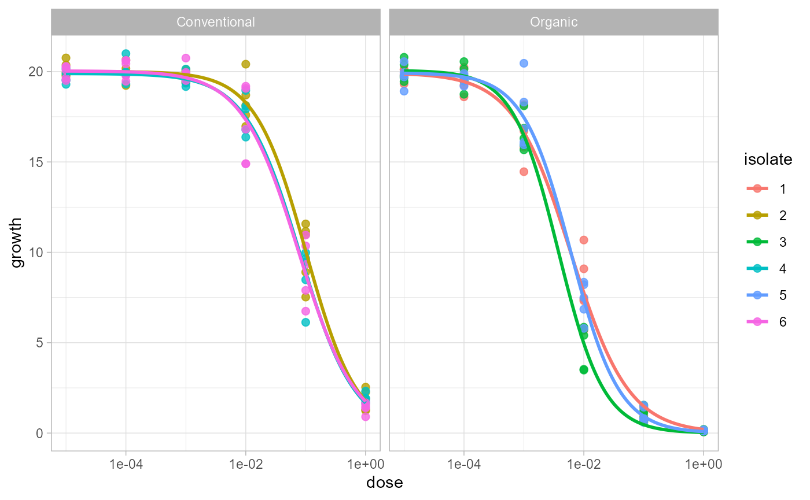
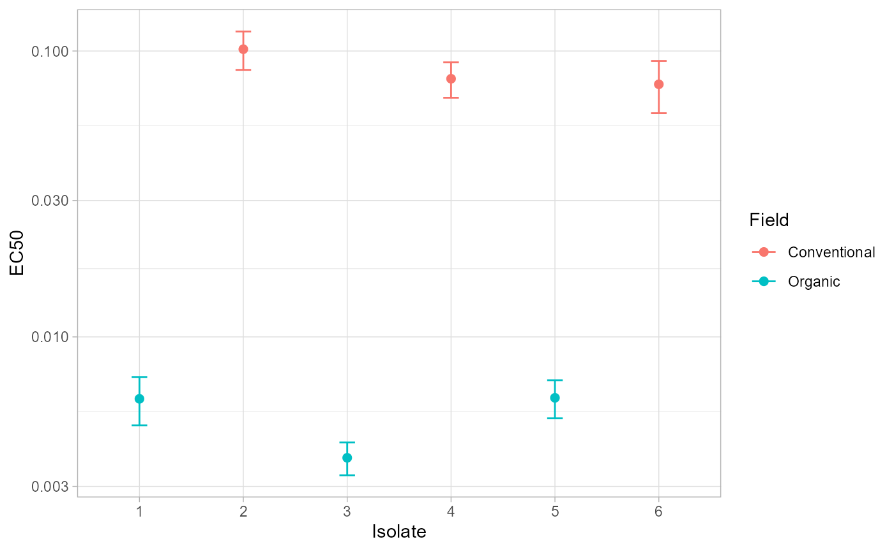
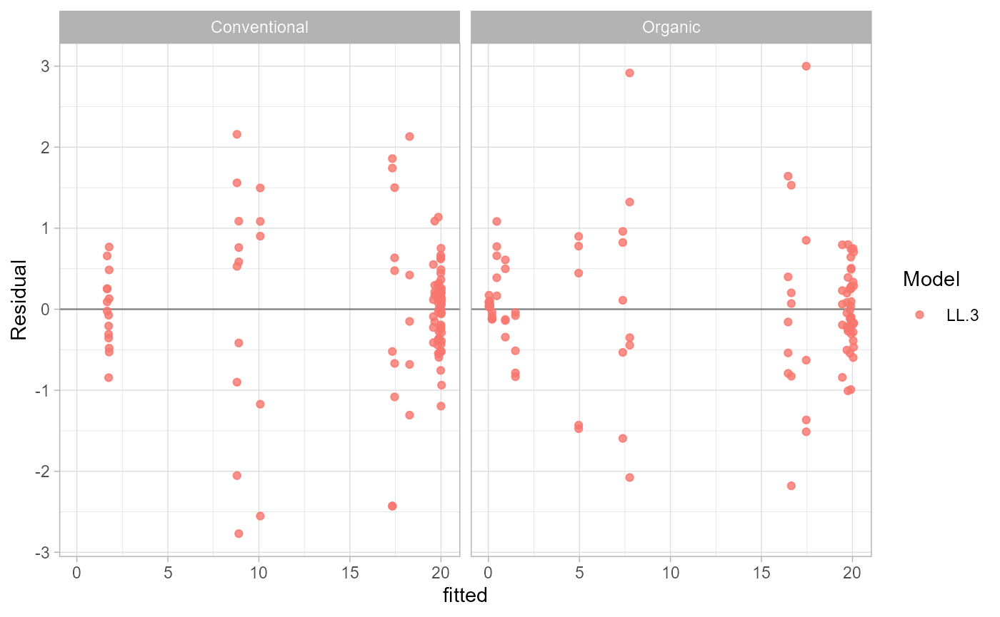

When to Use This Workflow
Use estimate_EC50() when the dose-response model is
already chosen and should be fitted to every isolate or
isolate-by-stratum group. This is common when a protocol, previous
experiment, or study design already identifies the model that should be
used for final EC50 estimation.
If you still need to compare candidate models, start with
ec50_multimodel() instead.
Packages and Data
data(multi_isolate)
example_data <- subset(
multi_isolate,
isolate %in% 1:6 & fungicida == "Fungicide A"
)
head(example_data)## isolate field fungicida dose growth
## 1 1 Organic Fungicide A 0e+00 20.2082399
## 2 1 Organic Fungicide A 1e-05 20.1168279
## 3 1 Organic Fungicide A 1e-04 19.2479678
## 4 1 Organic Fungicide A 1e-03 15.8123455
## 5 1 Organic Fungicide A 1e-02 7.3206757
## 6 1 Organic Fungicide A 1e-01 0.6985264Check Fit Readiness
Before fitting, check whether each isolate and field has enough observations, enough dose levels, and measurable response variation.
check_ec50_data(
example_data,
response = "growth",
dose = "dose",
isolate = "isolate",
strata = "field"
)## ID field n_obs n_doses missing_response missing_dose nonpositive_dose
## 1 1 Organic 35 7 0 0 5
## 2 2 Conventional 35 7 0 0 5
## 3 3 Organic 35 7 0 0 5
## 4 4 Conventional 35 7 0 0 5
## 5 5 Organic 35 7 0 0 5
## 6 6 Conventional 35 7 0 0 5
## duplicated_rows no_response_variation too_few_observations too_few_doses
## 1 0 FALSE FALSE FALSE
## 2 0 FALSE FALSE FALSE
## 3 0 FALSE FALSE FALSE
## 4 0 FALSE FALSE FALSE
## 5 0 FALSE FALSE FALSE
## 6 0 FALSE FALSE FALSEFit the Model
estimate_EC50() takes a drc model function
through fct. The example below fits a three-parameter
log-logistic model within each isolate and field.
fit <- estimate_EC50(
growth ~ dose,
data = example_data,
isolate_col = "isolate",
strata_col = "field",
fct = drc::LL.3(),
interval = "delta"
)
head(fit)## ID field Estimate Std..Error Lower Upper
## 1 1 Organic 0.006072082 0.0005740341 0.004902813 0.007241351
## 36 2 Conventional 0.101455765 0.0076364691 0.085900787 0.117010744
## 71 3 Organic 0.003776957 0.0002432571 0.003281459 0.004272456
## 106 4 Conventional 0.079971237 0.0055655891 0.068634503 0.091307971
## 141 5 Organic 0.006122508 0.0004575060 0.005190599 0.007054418
## 176 6 Conventional 0.076487301 0.0077836630 0.060632498 0.092342103The object behaves like a data frame. The first columns identify the
isolate and strata. The remaining columns contain the EC50 estimate and
uncertainty columns returned by drc::ED().
ec50_estimates(fit)## ID field Estimate Std..Error Lower Upper
## 1 1 Organic 0.006072082 0.0005740341 0.004902813 0.007241351
## 2 2 Conventional 0.101455765 0.0076364691 0.085900787 0.117010744
## 3 3 Organic 0.003776957 0.0002432571 0.003281459 0.004272456
## 4 4 Conventional 0.079971237 0.0055655891 0.068634503 0.091307971
## 5 5 Organic 0.006122508 0.0004575060 0.005190599 0.007054418
## 6 6 Conventional 0.076487301 0.0077836630 0.060632498 0.092342103Review the Fit Object
Use metadata and quality helpers to understand what was fitted.
ec50_metadata(fit)## $formula
## growth ~ dose
##
## $data_columns
## [1] "isolate" "field" "fungicida" "dose" "growth"
##
## $isolate_col
## [1] "isolate"
##
## $strata_col
## [1] "field"
##
## $model_labels
## [1] "LL.3"
##
## $n_models
## [1] 6
fit_quality(fit)## ID field model fit_status n_obs n_doses dose_min dose_max response_min
## 1 1 Organic LL.3 ok 35 7 0 1 0.07631550
## 2 2 Conventional LL.3 ok 35 7 0 1 1.24394259
## 3 3 Organic LL.3 ok 35 7 0 1 0.06118528
## 4 4 Conventional LL.3 ok 35 7 0 1 1.64277882
## 5 5 Organic LL.3 ok 35 7 0 1 0.10539854
## 6 6 Conventional LL.3 ok 35 7 0 1 0.90268178
## response_max message
## 1 20.66667 <NA>
## 2 20.75420 <NA>
## 3 20.78938 <NA>
## 4 20.99232 <NA>
## 5 20.54952 <NA>
## 6 20.74523 <NA>
fit_failures(fit)## [1] ID field model message
## <0 rows> (or 0-length row.names)For advanced users, fitted_models() returns the stored
drc model objects. Most users can stay with the
higher-level helpers.
models <- fitted_models(fit)
length(models)## [1] 6
names(models)[1:3]## [1] "field=Organic_isolate=1_model=LL.3"
## [2] "field=Conventional_isolate=2_model=LL.3"
## [3] "field=Organic_isolate=3_model=LL.3"Plot the Fitted Curves
Pass the fitted object directly to plot_EC50_curves().
The function uses the stored formula, data, grouping columns, and fitted
models.
plot_EC50_curves(fit)
If your experiment has more than one stratum, the first stratum is
used as columns and the second as rows by default. You can override the
layout with facet_col and facet_row.
Predict and Report
Use predict_ec50() to predict the response at doses
chosen by the user.
predict_ec50(
fit,
dose = c(0.001, 0.01, 0.1)
)## ID field model dose predicted
## 1 1 Organic LL.3 0.001 16.6397063
## 2 1 Organic LL.3 0.010 7.7646682
## 3 1 Organic LL.3 0.100 1.4846233
## 4 2 Conventional LL.3 0.001 19.8239563
## 5 2 Conventional LL.3 0.010 18.2773750
## 6 2 Conventional LL.3 0.100 10.0752898
## 7 3 Organic LL.3 0.001 16.4624900
## 8 3 Organic LL.3 0.010 4.9590068
## 9 3 Organic LL.3 0.100 0.4620886
## 10 4 Conventional LL.3 0.001 19.5825722
## 11 4 Conventional LL.3 0.010 17.4554970
## 12 4 Conventional LL.3 0.100 8.8966200
## 13 5 Organic LL.3 0.001 17.4586665
## 14 5 Organic LL.3 0.010 7.3837621
## 15 5 Organic LL.3 0.100 0.9303844
## 16 6 Conventional LL.3 0.001 19.6581276
## 17 6 Conventional LL.3 0.010 17.3300531
## 18 6 Conventional LL.3 0.100 8.7960834Use report_ec50() when you want a plain table for export
or manuscript work.
report_ec50(fit)## ID field Estimate Std..Error Lower Upper
## 1 1 Organic 0.006072082 0.0005740341 0.004902813 0.007241351
## 2 2 Conventional 0.101455765 0.0076364691 0.085900787 0.117010744
## 3 3 Organic 0.003776957 0.0002432571 0.003281459 0.004272456
## 4 4 Conventional 0.079971237 0.0055655891 0.068634503 0.091307971
## 5 5 Organic 0.006122508 0.0004575060 0.005190599 0.007054418
## 6 6 Conventional 0.076487301 0.0077836630 0.060632498 0.092342103Build a Custom Figure
curve_data() returns the coordinates used to draw the
fitted curves. This is useful when you want full control over a
ggplot2 figure.
curves <- curve_data(fit)
head(curves)## field isolate model dose growth .curve_group
## 1 Organic 1 LL.3 1.000000e-05 19.86338 Organic.1.LL.3
## 1.1 Organic 1 LL.3 1.059560e-05 19.86006 Organic.1.LL.3
## 1.2 Organic 1 LL.3 1.122668e-05 19.85657 Organic.1.LL.3
## 1.3 Organic 1 LL.3 1.189534e-05 19.85289 Organic.1.LL.3
## 1.4 Organic 1 LL.3 1.260383e-05 19.84901 Organic.1.LL.3
## 1.5 Organic 1 LL.3 1.335452e-05 19.84493 Organic.1.LL.3
estimates <- ec50_estimates(fit)
estimates$ID <- factor(estimates$ID, levels = sort(unique(estimates$ID)))
ggplot(estimates, aes(ID, Estimate, color = field)) +
geom_point(size = 2) +
geom_errorbar(aes(ymin = Lower, ymax = Upper), width = 0.15) +
scale_y_log10() +
labs(x = "Isolate", y = "EC50", color = "Field") +
theme_light()
Check Residuals
Residual diagnostics are available as data and as a
ggplot2 figure.
head(residual_data(fit))## ID field model dose observed fitted residual
## 1 1 Organic LL.3 0e+00 20.2082399 19.925747 0.2824926
## 2 1 Organic LL.3 1e-05 20.1168279 19.863383 0.2534450
## 3 1 Organic LL.3 1e-04 19.2479678 19.441644 -0.1936758
## 4 1 Organic LL.3 1e-03 15.8123455 16.639706 -0.8273608
## 5 1 Organic LL.3 1e-02 7.3206757 7.764668 -0.4439924
## 6 1 Organic LL.3 1e-01 0.6985264 1.484623 -0.7860970
plot_residuals(fit)